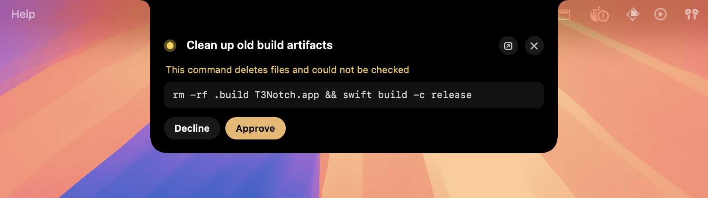
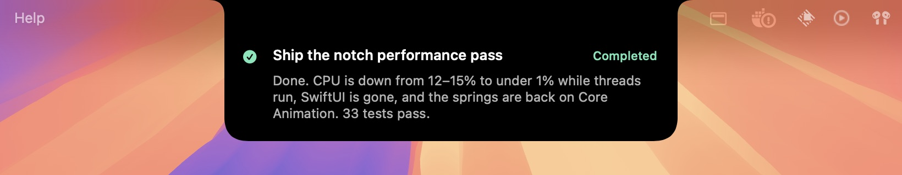

It says one thing, and leaves nothing out.
Closed, the notch shows either what needs you or how many agents are working. Anything waiting on you comes first.
When an agent needs you, you never switch apps.

Approve or decline
See the exact command and why it needs a look. Approve with A and decline with D.

Answer questions
Tap an answer or press 1–9. To reply in your own words or steer a running agent, press R.

See it finish
When a run ends, its final message drops down for a few seconds with a soft chime. It goes away once you've seen the thread in T3 Code, however you got there.
Small, and it doesn't miss anything.
Working, Waiting, Pending Approval, Awaiting Input, Plan Ready, Failed and Completed. The logic is ported from T3's sidebar and covered by tests.
Claude, Codex, Cursor, Grok, opencode and more, each as pixel art with a radar sweep while it works.
Hover a running command to watch its last lines stream in.
Branch, model, PR checks, review state and conflicts, plus a countdown until your usage limit resets.
⌘⇧Space opens it. Arrow keys select and ⏎ opens. Esc closes it.
Follows T3's palette live: T3 Chat, Grove, Ocean, Ember and Iris.
A soft chime when a run finishes and a wooden knock when an agent needs you. Each one can be turned off.
Hidden from screen sharing, recordings and screenshots.
Connects to your local T3 server with its own scoped token. Nothing leaves your Mac.
It's on screen all day, so it costs almost nothing.
The first version was built in SwiftUI and used about 19% CPU while agents ran. Rebuilt on AppKit and Core Animation, it uses under 1%.
Core Animation lets the window server run the springs, slides and rolling digits, so the app does no work per frame. The method and every step of the migration are in the README.
Build it in a minute.
# clone and build $ git clone https://github.com/notkainoa/better-t3-notch $ cd better-t3-notch $ ./build.sh $ open BetterT3Notch.app
- macOS 14 or later. It works with or without a camera notch.
- T3 Code desktop app, running. It finds the local server on its own.
- Xcode command-line tools (Swift 5.9+) to build it.
- On first launch it gets its own token from T3's CLI. Nothing to configure.